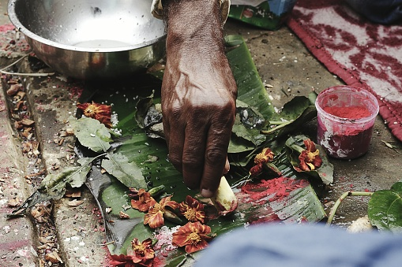

Medicina tradicional mexicana
El origen de la medicina tradicional en México se remonta a los años de conquista, de colonización, y conformación de la Nueva España. Basada en hierbas, hongos, limpias y remedios –casi– mágicos, su esencia permanece como lo que era originalmente: un cúmulo de saberes transmitidos generación tras generación, capaces de sanar el cuerpo humano de la mano de la naturaleza.
Es cierto que los avances de la medicina moderna a lo largo de la historia le han restado mérito a la tradicional, pero también lo es que no se puede hablar exactamente de comparaciones cuando se trata de cosas distintas. Guillermo Alfaro Telpalo, Doctor en Antropología Social y docente en la Universidad Iberoamericana, explica que fue a partir del Siglo IXX –cuando se organizó el conocimiento por disciplinas– que fue concebida la idea de que solamente los saberes estructurados dentro de aulas, bajo sistemas de acreditación, eran científicos. La medicina ancestral nunca entró en esta categoría por ser producto de la experiencia humana pura. Entonces bien, la diferencia principal entre la medicina moderna y la tradicional, está en los recursos con los que funcionan; mientras que una se sostiene en la tecnología, la segunda lo hace a partir de recursos naturales propios del entorno en el que se desarrolla.
La mayoría de los médicos tradicionales activos actualmente en México, provienen de alguno de los 68 pueblos indígenas que lo componen.
Medicina tradicional en la Ciudad de México
Hasta 2022 en la Ciudad de México se tiene registro de 145 médicos tradicionales, incluyendo a parteras, registrados ante la Secretaría de Pueblos y Barrios Originarios y Comunidades Indígenas Residentes. Dentro de esta cifra, 106 son mujeres y 38 son hombres. Los nahuas, establecidos desde Durango hasta Tabasco, Puebla y Veracruz, son la comunidad con mayor presencia en la cifra total registrada de médicos tradicionales del país, seguidos de los mixtecas, purépechas, tzotziles y mazahuas. En el siguiente mapa es posible visualizar los diferentes estados del país de los que provienen los 145 médicos tradicionales registrados en la Ciudad.

Los 145 médicos tradicionales registrados en la CDMX fueron incluidos en un directorio oficial en el que comparten su lugar de residencia y trabajo actual, así como sus datos de contacto. Así es como están distribuidos en las 16 alcaldías:

El reconocimiento de la medicina tradicional mexicana no funciona igual en todo el país, de hecho, los únicos estados que la contemplan dentro de su Ley de Salud, además de la Ciudad de México, son Morelos, Chiapas, Oaxaca y San Luis Potosí. Según el Programa de Política Nacional de Medicina Tradicional Indígena, el trabajo de los médicos tradicionales en México se considera “importante” por temas de inclusión y derechos, es decir, se reconoce a la medicina tradicional, complementaria o alternativa, como un derecho cultural de los pueblos indígenas. Por lo anterior, surgen algunas complicaciones para estos grupos, por ejemplo, que el Sistema de Salud Nacional no tenga como prioridad crear reglas adecuadas para aprobar los conocimientos y las técnicas de los curanderos indígenas. La medicina tradicional entonces, se respaldada con la intención de que los curanderos y parteras colaboren a favor de apaciguar problemas de salud en sus propias comunidades. Alfaro explica que, ante las carencias del Sistema de Salud en nuestro país, y las dificultades para acceder a ciertas zonas, se espera que los médicos tradicionales sustituyan la falta de centros de salud para brindar atención médica básica.
La representación de estos grupos también es un asunto complejo, puesto que el gremio se subdivide en distintas ramas y especialidades. Además, no todo “médico tradicional indígena” es considerado así. Es muy común que a ciertas comunidades se les identifique como practicantes de magia, brujería, herbolaria, etc. “No hay un solo tipo de médico tradicional, tenemos 68 pueblos indígenas en México, y no es lo mismo lo que sabe hacer un maracame huizrárica –un huichol– a lo que hace un nahua de Milpa Alta. Sí, hay una base de medicina tradicional, pero es posible que el huizrárica recurra mucho más a la parte de la cosmovisión. Y tú no vas a atenderte para ver si el médico comparte tu cosmovisión, tú te fijas en que tenga los títulos, cosas que lo avalen. En sí es muy complejo homogenizar aspectos culturales, y en las comunidades funciona así; si no tenemos cerca a un alópata, pues nos curamos con el maracame”, comentó Alfaro. Además, aclaró que las denominaciones “brujo” y “hechicero”, son resultado del clasismo y la desinformación.
El apoyo que reciben los médicos pertenecientes a este sector no es necesariamente suficiente. Como ejemplo, se sabe que el IMSS (Instituto Mexicano del Seguro Social), les otorga a todos los médicos tradicionales indígenas que sean reconocidos socialmente por su labor en la comunidad, una identificación que los acredita como profesionistas, sin embargo, dichas credenciales funcionan solamente para acceder a las instalaciones propiedad del Seguro Social.
“La Secretaría de Salud es la que tiene que otorgarles permisos. Vamos lento, pero creo que ya es un avance que se considere que los médicos tradicionales aportan al sistema de salud. Una de las cosas que se tienen que garantizar antes de aprobarlos como médicos, es que realicen intervenciones seguras, basadas en una fuente concreta y autorizada de saberes. Claro que hay comunidades en donde esto ya está probadísimo, porque no hay médicos modernos, no hay unidades hospitalarias, entonces la gente se cura con el conocimiento local, con la familia, con el curandero, y así han sobrevivido por generaciones”, explicó Alfaro al respecto.
Desde 1973 se han presentado iniciativas para extender los servicios de salud a las comunidades más desfavorecidas. Durante dicho proceso se evidenció que, en efecto, una solución viable para cubrir los huecos del sistema de salud mexicana en ese tipo de lugares era haciendo que los mismos integrantes de la comunidad prestaran servicios de ayuda, en pocas palabras, que ejercieran como médicos, parteros y curanderos, sin ser necesariamente reconocidos como tal.
Después de más de cuarenta años, parece que la inclusión ha dado un paso al frente: “La idea es que, en el proceso de federalización de los sistemas estatales de salud, la participación de la partería y de la medicina tradicional se mantenga y fortalezca”, declaró Zoé Robledo, director general del IMSS en una conferencia de prensa durante “La Mañanera” del presidente Andrés Manuel López Obrador.
En un boletín de prensa sobre el Instituto Mexicano del Seguro Social (IMSS), publicado en la página oficial del Gobierno de México el 6 de septiembre de 2022, se declaró que 6 mil 664 parteras, 754 médicos tradicionales y 15 775 voluntarios rurales habían sido vinculados al programa IMSS-Bienestar.
“Cuando empezó esta administración en 2018, había 280 unidades hospitalarias abandonadas que se construyeron, pero nunca funcionaron. A lo que voy con esto es a que no sabemos cómo se ha avanzado en cobertura. Habrá que esperarnos a los datos oficiales. Lo que sí es bueno es que se empiece a hablar de que, pronto, los médicos tradicionales van a estar incluidos en el sistema de salud”, dice Guillermo Alfaro, respecto al panorama actual y lo que se espera en un futuro próximo.